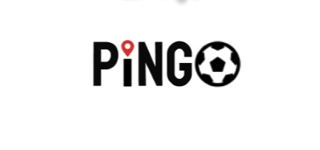
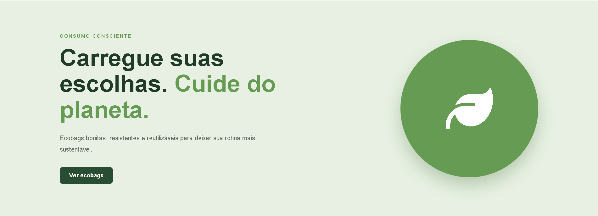
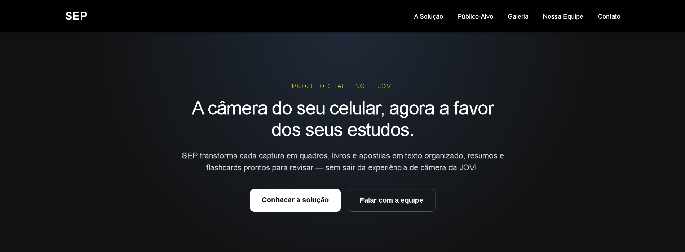

IDENTIDADE DO PROJETO

PINGO — Sistema de Quadras
API REST para gerenciamento de quadras e agendamentos, com rotas, controllers, models, regras de negócio e integração com MySQL.
DESENVOLVIMENTO DE SOFTWARE · SÃO PAULO, SP
Olá, eu sou Lucas Kaoru. Desenvolvedor em formação, focado em criar APIs, resolver problemas de negócio e construir aplicações web úteis.
01 / SOBRE MIM
Gosto de entender como as coisas funcionam por trás da interface — da regra de negócio à consulta no banco de dados.
Sou estudante de Engenharia de Software na FIAP e técnico em Desenvolvimento de Sistemas pela ETEC Paulista. Tenho desenvolvido projetos acadêmicos e pessoais para praticar lógica, APIs REST, organização em camadas e integração com bancos de dados.
Meu foco neste momento é fortalecer a base em Back-end com Node.js, sem deixar de evoluir no Front-end para construir aplicações completas.
Mais sobre minha trajetória no LinkedIn ↗Projetos reais para transformar estudo em prática.
02 / PROJETOS SELECIONADOS
Projetos acadêmicos e pessoais. Cada um é uma oportunidade de aprender algo novo e melhorar o que já sei.

API REST para gerenciamento de quadras e agendamentos, com rotas, controllers, models, regras de negócio e integração com MySQL.
API para consulta de livros e controle de empréstimos e devoluções, com validações e responsabilidades separadas em camadas.

E-commerce de ecobags com catálogo, filtros por categoria e preço, carrinho persistido e checkout com validação.

Protótipo web com telas responsivas para apresentar uma proposta de melhoria da segurança escolar, com persistência local.
03 / TECNOLOGIAS
As ferramentas que estou usando para tirar ideias do papel e melhorar minha prática de desenvolvimento.
Minha principal direção de estudo
Construção de interfaces
Fluxo de trabalho e base técnica
* Prefiro construir, testar, errar e entender o motivo — não apenas fazer o código funcionar uma vez.
04 / TRAJETÓRIA
Minha formação combina base técnica, graduação e projetos para aprender com situações reais.
Prática contínua com Node.js, Express, SQL, organização em camadas e evolução dos projetos pessoais.
APRENDIZADO CONTÍNUOGraduação em andamento, aprofundando fundamentos de desenvolvimento, arquitetura e construção de sistemas.
EM ANDAMENTOFormação técnica concluída com base em lógica, desenvolvimento de aplicações e fundamentos de sistemas.
CONCLUÍDO05 / CONTATO
Estou buscando uma oportunidade de estágio em desenvolvimento de software para contribuir, aprender com o time e evoluir na prática.